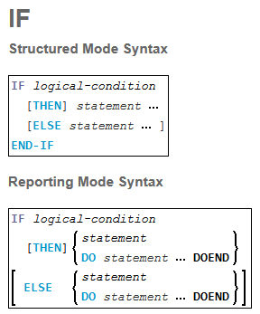
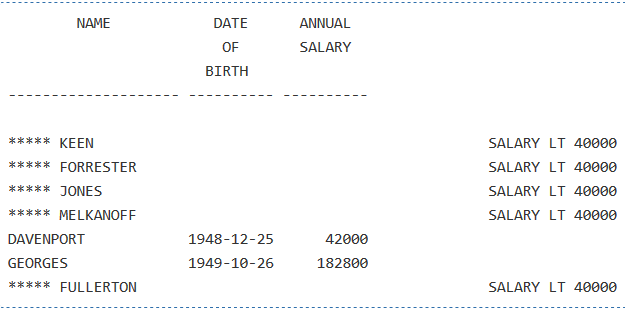

What are conditional statements?
The execution of conditional statements depends on some condition and one example is an IF statement, where you define a logical condition, and the execution of the statement attached to the IF statement then depends on that condition.
Note: If no action is to be performed in case the condition is met, you must specify the statement IGNORE in the THEN clause.
Syntax Description
| Syntax Element | Description |
|---|---|
| IF logical-condition | Logical Condition Criterion:
The logical condition which is used to determine whether the statement or statements specified with the IF statement are to be executed.
Examples: IF #A = #B IF LEAVE-TAKEN GT 30 IF #SALARY(1) * 1.15 GT 5000 IF SALARY (4) = 5000 THRU 6000 IF DEPT = 'A10' OR = 'A20' OR = 'A30' |
| THEN statement | THEN Clause: In the THEN clause, you specify the statement(s) to be executed if the logical condition is true. |
| ELSE statement | ELSE Clause: In the ELSE clause, you specify the statement(s) to be executed if the logical condition is not true. |
| END-IF | END of IF Statement: In structured mode, the Natural reserved word END-IF must be used to end the IF statement. |
Few examples with their outputs...Example 1:
***********************************************************************
DEFINE DATA LOCAL
1 MYVIEW VIEW OF EMPLOYEES
2 NAME
2 BIRTH
2 CITY
2 SALARY (1:1)
END-DEFINE
*
LIMIT 7
READ MYVIEW BY CITY STARTING FROM 'C'
IF SALARY (1) LT 40000 THEN
WRITE NOTITLE '*****' NAME 30X 'SALARY LT 40000'
ELSE
DISPLAY NAME BIRTH (EM=YYYY-MM-DD) SALARY (1)
END-IF
END-READ
END
************************************************************************
Explanation...
- IF the salary is less than 40000, THEN the WRITE statement is to be executed;
- otherwise (ELSE), that is, if the salary is more than 40000 or more, the DISPLAY statement is to be executed
Output:
Example 2:
************************************************************************
DEFINE DATA LOCAL
1 EMPLOY-VIEW VIEW OF EMPLOYEESv
2 NAME
2 CITY
2 BONUS (1,1)
2 SALARY (1)
*
1 #INCOME (N9)
1 #TEXT (A26)
END-DEFINE
*
WRITE TITLE '-- DISTRIBUTION OF CATALOGS I AND II --' /
*
READ (3) EMPLOY-VIEW BY CITY = 'SAN FRANSISCO'
COMPUTE #INCOME = BONUS(1,1) + SALARY(1)
/*
IF #INCOME > 40000
MOVE 'CATALOGS I AND II' TO #TEXT
ELSE
MOVE 'CATALOG I' TO #TEXT
END-IF
/*
DISPLAY NAME 5X 'SALARY' SALARY(1) / BONUS(1,1)
WRITE T*SALARY '-'(10) /
16X 'INCOME:' T*SALARY #INCOME 3X #TEXT /
16X '='(19)
SKIP 1
END-READ
END
************************************************************************
Output:

Nested IF Statements
It is possible to use various nested IF statements; for example, you can make the execution of a THEN clause dependent on another IF statement which you specify in the THEN clause.
Example 3:
************************************************************************
DEFINE DATA LOCAL
1 MYVIEW VIEW OF EMPLOYEES
2 NAME
2 CITY
2 SALARY (1:1)
2 BIRTH
2 PERSONNEL-ID
1 MYVIEW2 VIEW OF VEHICLES
2 PERSONNEL-ID
2 MAKE
*
1 #BIRTH (D)
END-DEFINE
*
MOVE EDITED '19450101' TO #BIRTH (EM=YYYYMMDD)
*
LIMIT 20
FND1. FIND MYVIEW WITH CITY = 'BOSTON'
SORTED BY NAME
IF SALARY (1) LESS THAN 20000
WRITE NOTITLE '*****' NAME 30X 'SALARY LT 20000'
ELSE
IF BIRTH GT #BIRTH
FIND MYVIEW2 WITH PERSONNEL-ID = PERSONNEL-ID (FND1.)
DISPLAY (IS=ON) NAME BIRTH (EM=YYYY-MM-DD)
SALARY (1) MAKE (AL=8 IS=OFF)
END-FIND
END-IF
END-IF
SKIP 1
END-FIND
END
************************************************************************